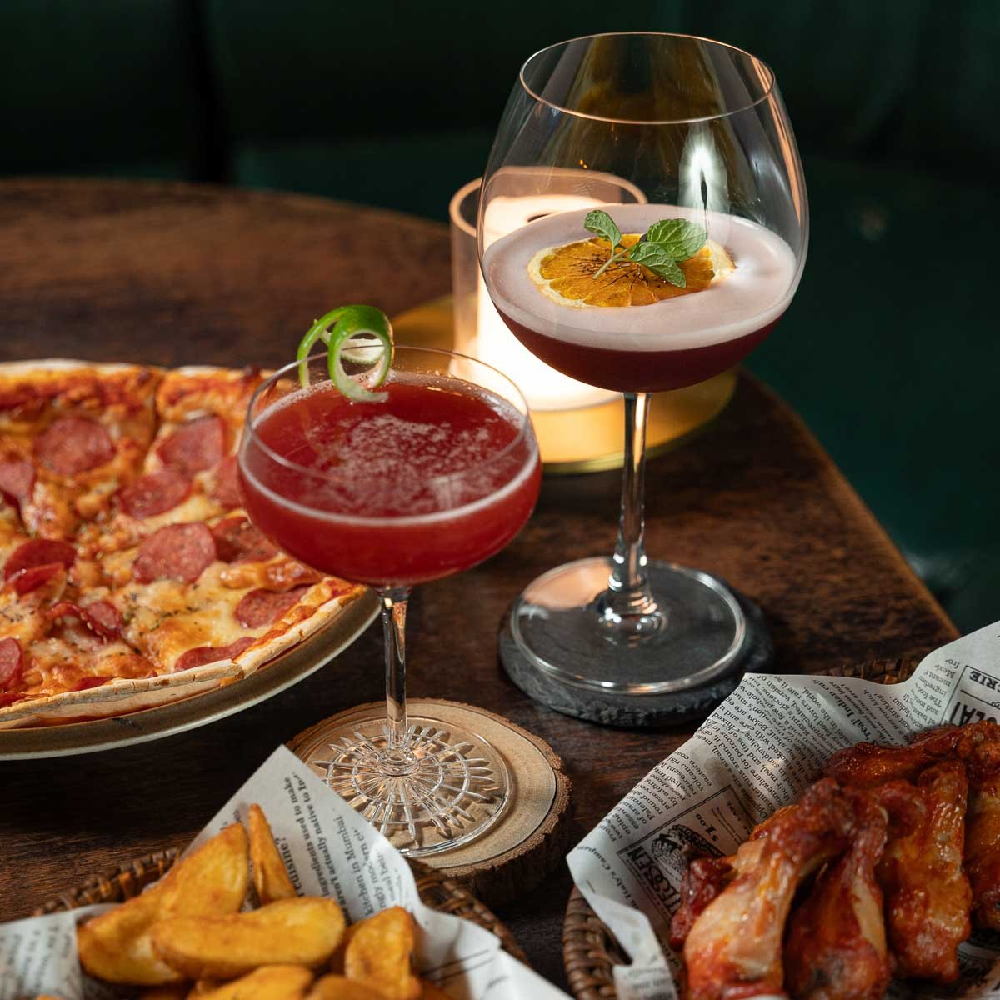

SCROLL TO SLOW DOWN
BAR EASY TAICHUNG西屯・永福路 118 巷
01 / THE EASY WAY
來一點，不趕時間的日常。留一個夜晚，
給自己。
A place to just be.
推開門，
把城市的匆忙留在身後。
在台中西屯的一隅，紅磚、木質與暖光，
圍出一個能自在說話、安靜坐著的地方。
坐在吧台前，或窩進熟悉的沙發。
和朋友聊聊近況，也和自己好好相處。
今晚，在 Bar Easy，慢慢來就好。

02 / MAKE YOURSELF AT HOME
有些地方，
一坐下就懂。
深綠的皮革、帶著紋理的木桌，
燈光落在紅磚上，剛好溫柔。
像走進英倫街角的一間熟悉酒吧，
讓相聚，自然而然地發生。
I.
木質吧台A SEAT AT THE BAR
II.
沙發角落YOUR COZY CORNER
III.
琥珀暖光WARM LIGHT, SLOW NIGHTS
03 / SOMETHING TO SAVOR
舉杯之外，也好好吃飯。COCKTAILS & BITES
Good drinks.
Better company.
喜歡的酒，剛好的陪伴。
從調酒到威士忌，從披薩到佐酒小食，
把一個人的放鬆，或一群人的相聚，
都交給這張餐桌。
告訴我們你偏好的風味，
一起找到今晚想喝的那一杯。

04 / WE'LL SAVE YOU A SEAT
在巷弄裡，等你。FIND US門市地址
台中市西屯區
永福路 118 巷 3 號開啟 Google 地圖
永福路 118 巷 3 號開啟 Google 地圖
SAY HELLO聯絡電話
04 2463 1428歡迎來電洽詢座位與聚會安排。
BEFORE YOU GO營業資訊